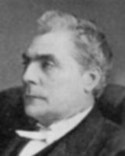

GMBH Tree - Person Sheet
GMBH Tree - Person Sheet


Spouses
Marriage1856
ChildrenMartin (1856-1938)
Janet Charlotte (1858-1935)
Catherine (1860-)
Wallace (1861-)
Abbie Margaret Wilhemina Tulloch (1866-1950)
James Alexander (1862-1923)
Wallace (~1862-)
John (1868-)
Lucy (1872-)
Notes for Hon. James Macdonald
In front of the Bridgeville United Church at Bridgeville, Pictou County is a millstone which contains the following inscription on an inset contained on the millstone:
1828 IN MEMORY OF 1912
HON. JAMES MACDONALD
1878 MINISTER OF JUSTICE 1881
1881 CHIEF JUSTICE OF NOVA SCOTIA 1904
BORN IN BRIDGEVILLE JULY l, 1828 A LEADING
EXPONENT OF CONFEDERATION IN THIS COUNTRY
”MACDONALD OF PICTOU IS AS TRUE AS STEEL
AND IS, I THINK, THE ABLEST MAN IN THE
HOUSE OF COMMONS. HE HAS AT ONCE TAKEN
THE VERY FIRST RANK AND POSITION IN IT”
SIR JOHN A. MACD.
ERECTED BY THE MUNICIPAL CENTENNIAL
COMMITTEE IN CO-OPERATION WITH THE
CITIZENS OF BRIDGEVILLE ON JULY 22,1967.5000
1828 IN MEMORY OF 1912
HON. JAMES MACDONALD
1878 MINISTER OF JUSTICE 1881
1881 CHIEF JUSTICE OF NOVA SCOTIA 1904
BORN IN BRIDGEVILLE JULY l, 1828 A LEADING
EXPONENT OF CONFEDERATION IN THIS COUNTRY
”MACDONALD OF PICTOU IS AS TRUE AS STEEL
AND IS, I THINK, THE ABLEST MAN IN THE
HOUSE OF COMMONS. HE HAS AT ONCE TAKEN
THE VERY FIRST RANK AND POSITION IN IT”
SIR JOHN A. MACD.
ERECTED BY THE MUNICIPAL CENTENNIAL
COMMITTEE IN CO-OPERATION WITH THE
CITIZENS OF BRIDGEVILLE ON JULY 22,1967.5000